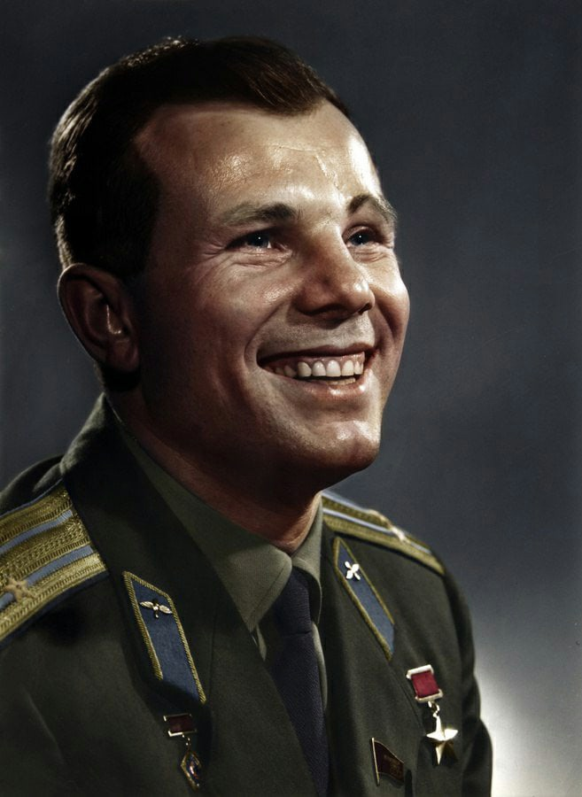

День космонавти
12 апреля 1961 года советский космонавт Юрий Гагарин на космическом корабле «Восток-1» стартовал с космодрома «Байконур» и впервые в мире совершил орбитальный облёт планеты Земля. Полёт в околоземном космическом пространстве продлился 108 минут[1].
В Советском Союзе праздник установлен указом Президиума Верховного Совета СССР от 9 апреля 1962 года. Отмечается под названием День космонавтики. Этот праздник установлен по предложению второго лётчика-космонавта СССР Германа Титова, который обратился в ЦК КПСС с соответствующим предложением 26 марта 1962 года[2].

12 апреля 1961 года советский космонавт Юрий Гагарин на космическом корабле «Восток-1» стартовал с космодрома «Байконур» и впервые в мире совершил орбитальный облёт планеты Земля. Полёт в околоземном космическом пространстве продлился 108 минут[1].
В Советском Союзе праздник установлен указом Президиума Верховного Совета СССР от 9 апреля 1962 года. Отмечается под названием День космонавтики. Этот праздник установлен по предложению второго лётчика-космонавта СССР Германа Титова, который обратился в ЦК КПСС с соответствующим предложением 26 марта 1962 года[2].
В этот же день отмечается Всемирный день авиации и космонавтики согласно протоколу (п. 17) 61-й Генеральной конференции Международной авиационной федерации, состоявшейся в ноябре 1968 года, и решению Совета Международной авиационной федерации, принятому 30 апреля 1969 года по представлению Федерации авиационного спорта СССР[3].
В Российской Федерации День космонавтики отмечается в соответствии со статьёй 1.1 Федерального закона от 13 марта 1995 года № 32-ФЗ «О днях воинской славы и памятных датах России»[4]. Как правило, главные мероприятия в рамках празднования праздника проходят в Москве: в Московском планетарии проводятся экскурсии, а в Музее космонавтики готовят специальные проекты, лекции и встречи.